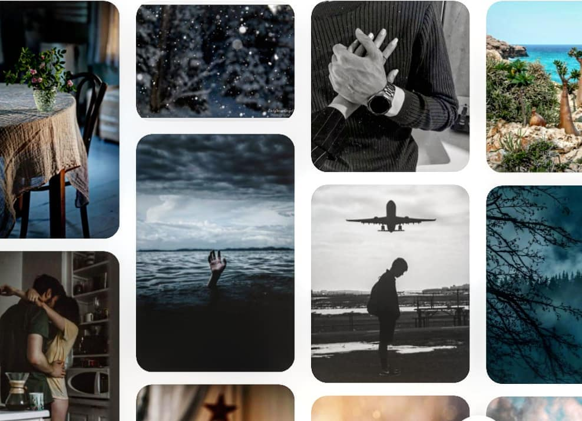

Minútky podľa @veronika.jonesova — Normy Jedál
Psaní a tvorba knihy je pro mě kromě toho, že láska a sen, taky škola. Ale v naprosto ryzím a pravém slova smyslu. V životě jsem nevěnovala tolik času, energie, peněz a odhodlání, vzdělávání se v oboru.
Ale ono to souvisí, pokud tě to baví, tak to prostě děláš. Občas je to ale fakt náročný, protože mi nezazvoní zvonek a nezahlásí přestávku, není nikdo, kdo mě procesem vede za ručičku, nemám nad sebou bič, takže dokud se k psaní nedokopu sama, nikdo jiný to za mě neudělá. Nikdo jiný za mě knihu nenapíše. A v téhle výměně energií, je schovaná celá magie toho, že je prostě poznat pokud to, co vytváříš, vytváříš srdcem.
#srdcem #slaskou #minutky #hodinky #knihahodinky #knihaminutky #psani #psanijelaska #ilustrace #pinterest #sokotra #letadlo #kvetina #laska #kolaz #ilustration #book #love #airplane #canwepretendthatairplanesinthenightskyarelikeshootingstars #heart #passion #colors